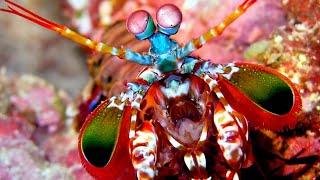
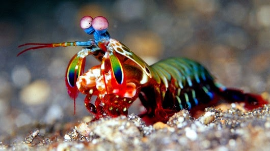

Fatos sobre o Stomatopoda
Informações gerais:
Nome científico: Odontodactylus scyllarus
Força do Stomatopoda
Um ataque de uma garra de camarão mantis é tão forte que pode quebrar o vidro do aquário.
Visão do Stomatopoda
Os estomatópodes têm a visão mais complexa do reino animal

Reprodução e Ciclo de Vida
Em média, um camarão mantis vive 20 anos. Durante sua vida, ele pode se reproduzir de 20 a 30 vezes.
Refências bibligráficas
- https://ao.figgysfoodtruck.com/2076-mantis-shrimp-facts-stomatopoda.html
- https://www.greelane.com/pt/ci%c3%aancia-tecnologia-matem%c3%a1tica/animais-e-natureza/mantis-shrimp-facts-4582442/